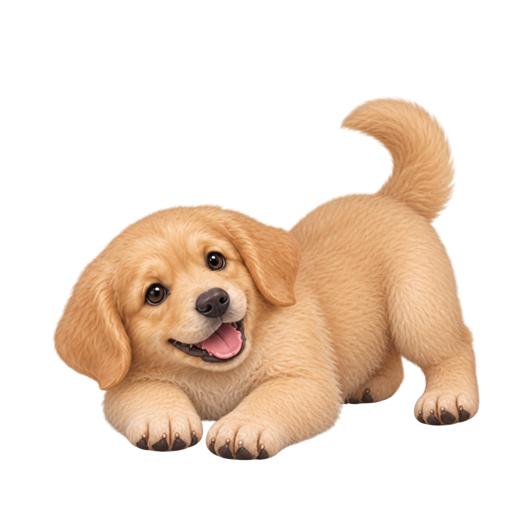

小金金的 Pounce 動畫預覽
這是用 belly-up-01 同一隻兩個月幼金金做的 8 格草稿。請看它是不是「蓄力 → 往前撲 → 前腳先落地 → 後腳跟上 → 回到 play bow」，而不是左右跳位。

1／蓄力：前胸壓低、屁股抬高
第 1 格／8 格
1–2 蓄力前胸低、後腳收好，先準備再出發。
3–4 伸展身體沿同一個低弧線向前，前腳帶動。
5 接地前腳先碰地，不突然站起或翻方向。
6–7 跟上肩膀先沉，後腳與尾巴跟著收回。
8 回位回到 play bow，接回第 1 格。